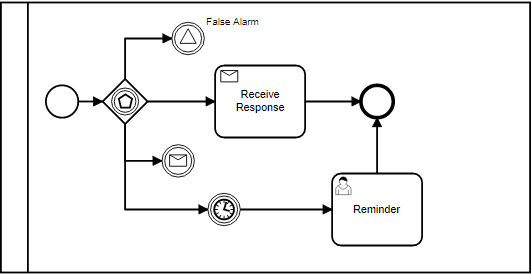
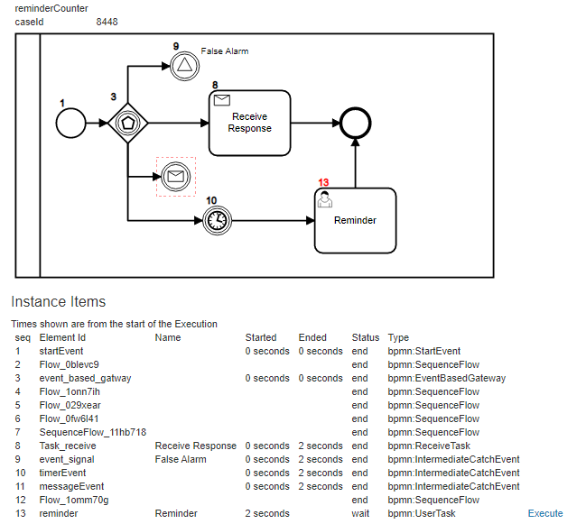

Event Based Gateway:#

Event Based Gateway launches all valid outbound flows, but once on event is completed, it must cancel the rest.
const { BPMNServer , DefaultHandler , Logger } = require("../../");
const { configuration } = require('../../configuration');
const logger = new Logger({ toConsole: false });
const server = new BPMNServer(configuration, logger);
let name = 'Event Based Gateway';
let process;
let response;
let instanceId;
Feature('Event Based Gateway', () => {
Scenario('All', () => {
Given('Start Process', async () => {
response = await server.execute(name, { reminderCounter: 0, caseId: 1005 });
});
Then('events should fire and wait', () => {
expect(response).to.have.property('execution');
instanceId = response.execution.id;
expect(getItem('timerEvent').status).equals('wait');
expect(getItem('messageEvent').status).equals('wait');
expect(getItem('Task_receive').status).equals('wait');
expect(getItem('event_signal').status).equals('wait');
});
to visualize the process, let us borrow from the WebApp

When('we wait a bit for timer to complete', async () => {
await delay(3000, 'test');
// we restore to get latest status; since the timer did some work in the background!
response = await server.restore({ "id": instanceId });
});
Then('after wait - timer should have completed', () => {
expect(getItem('timerEvent').status).equals('end');
});
and('other events complete as well', () => {
expect(getItem('messageEvent').status).equals('end');
expect(getItem('Task_receive').status).equals('end');
expect(getItem('event_signal').status).equals('end');
});
and('also reminder task will fire', () => {
expect(getItem('reminder').status).equals('wait');
});
again, let us see what it looks like now!

When('we issue reminder', async () => {
const query = {
instance: { id: instanceId },
items: { elementId: 'reminder' }
};
response=await server.invoke(query, {});
});
and('write log file to' + name + '.log', async () => {
let fileName = __dirname + '/../logs/' + name+ '.log';
logger.save(fileName);
});
});
});
async function delay(time) {
log("delaying ... " + time)
return new Promise(function (resolve) {
setTimeout(function () {
log("delayed is done.");
resolve();
}, time);
});
}
function log(msg) {
logger.log(msg);
}
function getItem(id)
{
const item = response.items.filter(item => { return item.elementId == id; })[0]
if (!item) {
log('item ' + id + ' not found');
}
return item;
}